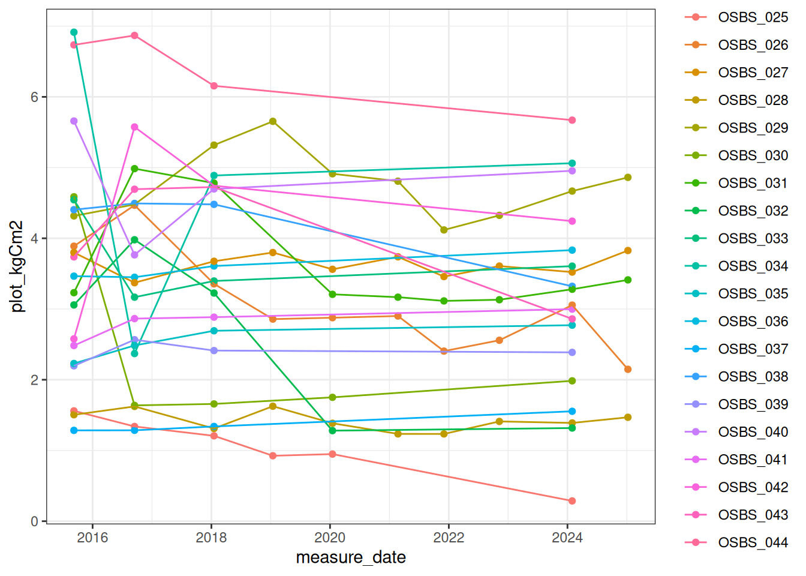
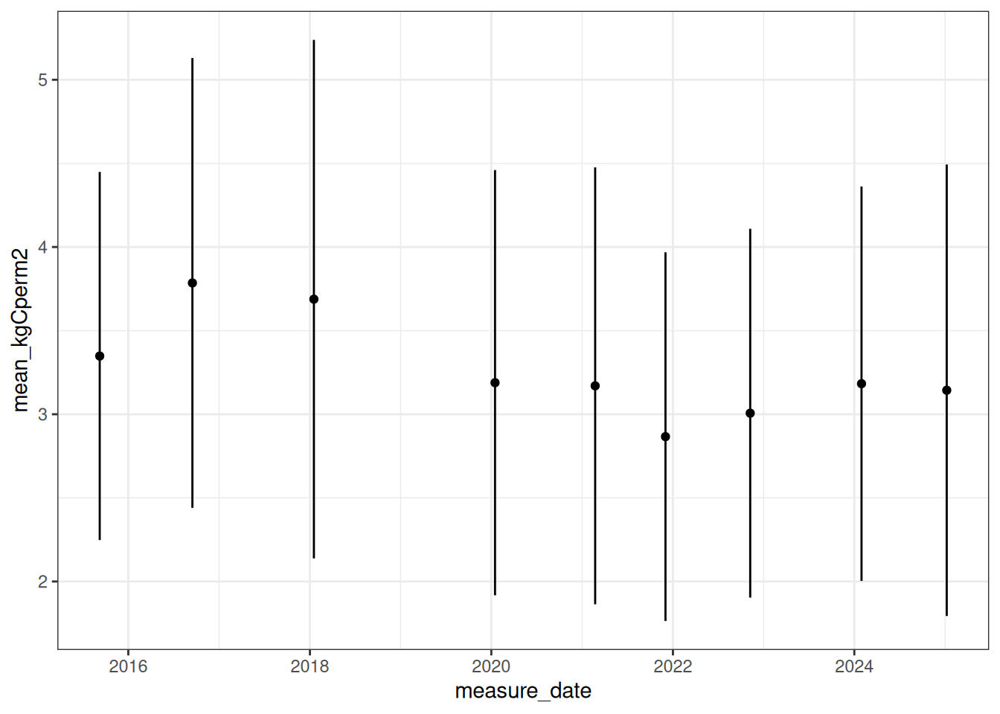
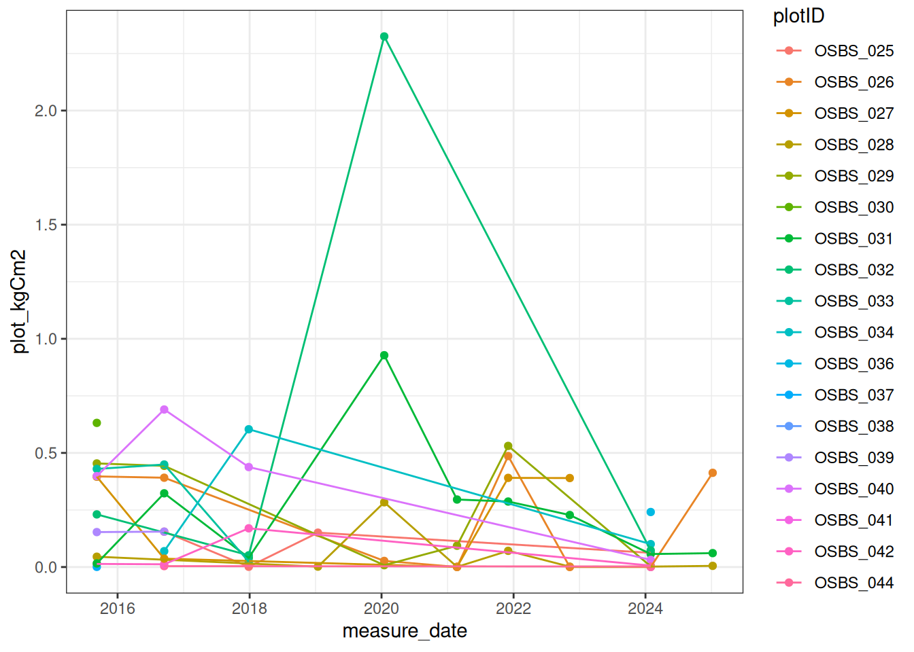
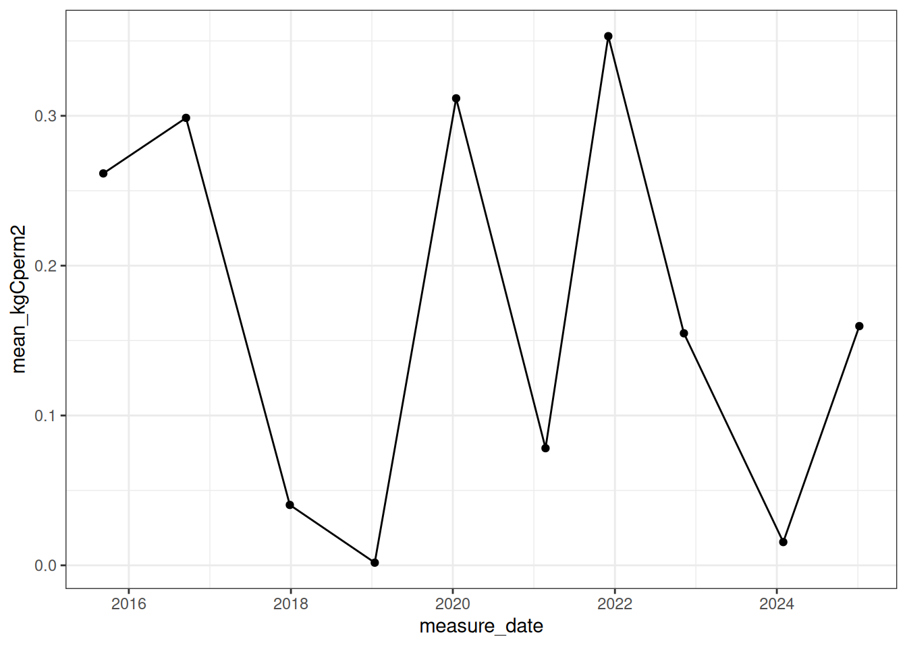
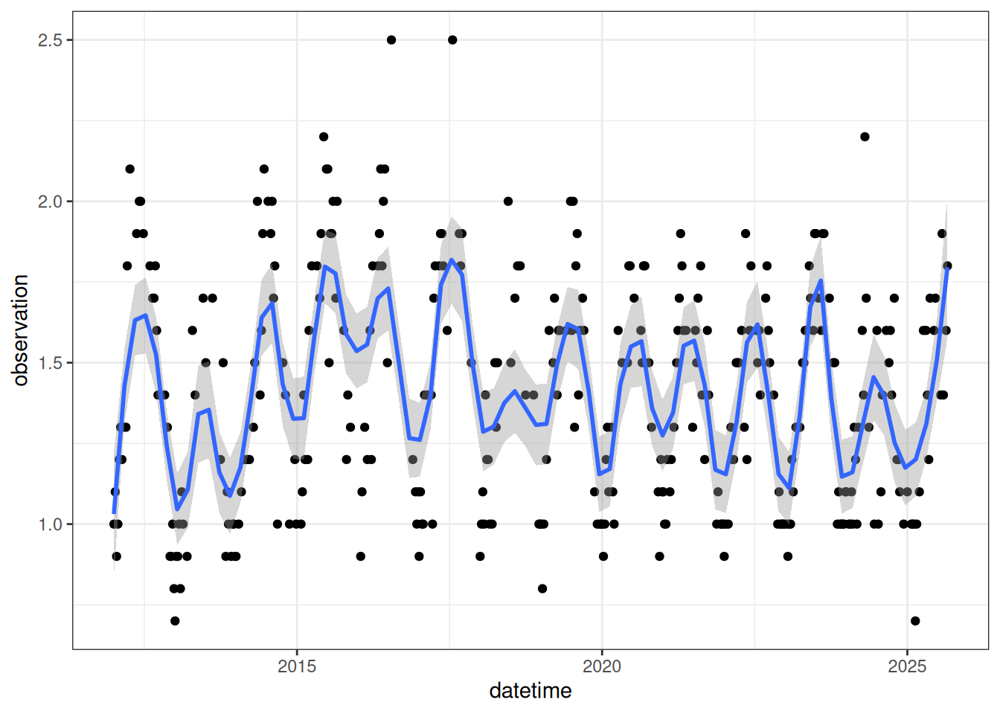
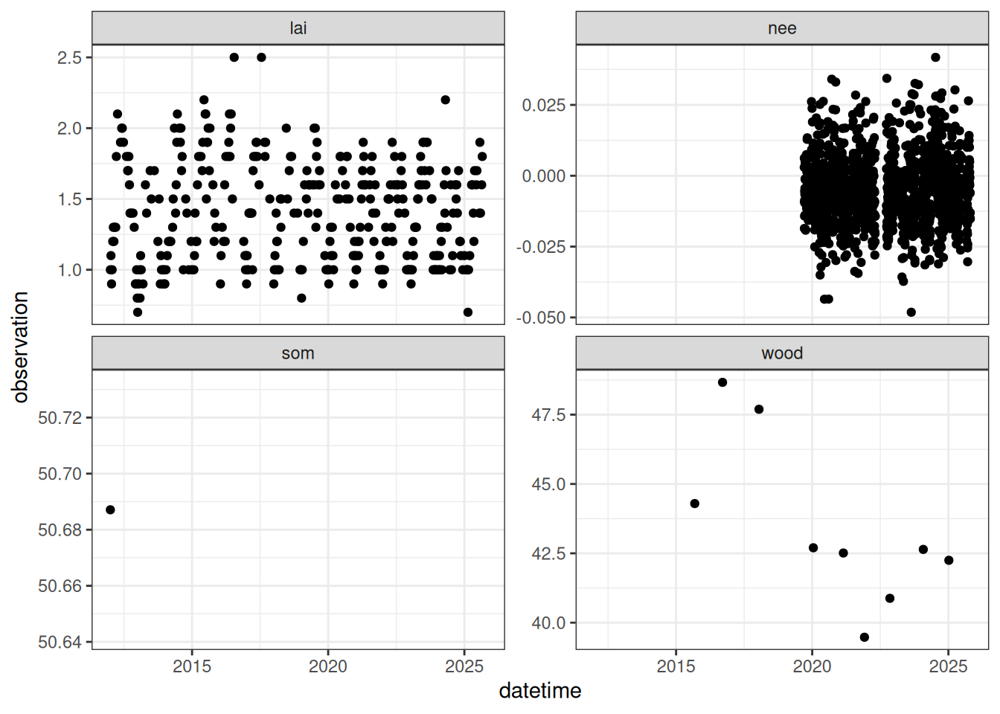

library(tidyverse)
library(neonstore)18 Data to constrain process model
The goal of this chapter is to access and process data from the National Ecological Observatory Network (NEON) to calibrate parameters, estimate parameter uncertainty, assimilate data, and evaluate output from the forest carbon model in Chapter 16. The data that is prepared for use in the forest carbon model is used in subsequent chapters.
In this document, we will be calculating the carbon in tree wood, tree leaves, and soil for a NEON site (matching the model states in Chapter 16).
The carbon in wood is based on the conversion of tree diameter measurements to carbon in stems and coarse woody roots. Since our simple forest model does not have a specific representation of fine roots, we lump fine roots with the wood stock.
The carbon in tree leaves is represented by data measuring leaf area index (which is related to leaf carbon through a mass-to-area conversion).
The carbon in soil represents all dead organic matter (both soil and vegetation) and lumps together standing dead trees, dead trees that have fallen (coarse woody debris), and soil organic matter measured using soil pits.
Fluxes of carbon are represented by net ecosystem exchange (nee), as measured by eddy covariance towers.
Much of the code in this chapter is specific to NEON and the particular carbon pools and fluxes analyzed. While the chapter focuses on a single NEON site, the code and concepts can be applied to developing carbon budgets at other forested NEON sites. Additional carbon stock collections are needed at grassland sites (e.g., the non-woody vegetation sampling needs to be processed).
This chapter was developed in collaboration with John Smith at Montana State University.
NEON data is organized by data product ID in the NEON Data Portal: https://data.neonscience.org/static/browse.html
The chapter uses the neonstore packages developed by Carl Boettiger to access NEON data. The neon_cloud function uses the NEON data product ID and the table within the product to download the data from NEON cloud storage. If you are new to a NEON data product, it is important to explore the data product on NEON’s Data Portal before using the neon_cloud functionality (otherwise you don’t know what tables you need to download and how they link together).
18.1 NEON Project
18.2 NEON Terrestrial sites
18.3 Download data
First, we define the site ID. The four letter site code denotes individual NEON sites. You can learn more about NEON sites here: https://www.neonscience.org/field-sites/explore-field-sites.
The elevation, latitude, and longitude are needed to convert the tree diameter measurements to biomass and are found on the NEON page describing the site.
site <- "OSBS"
elevation <- 46
latitude <- 29.689282
longitude <- -81.99343118.4 Wood carbon
In this section, we will be calculating carbon in live and dead trees at a NEON site. The carbon in live trees represents the wood carbon stock in Figure 16.1 and the dead trees represent a component of the soil organic matter stock in Figure 16.1. In the end, we will have a site-level mean carbon stock in live trees and dead trees for each year that was sampled from the plots that represent the ecosystem under the flux tower (e.g., tower plots). We use the tower plots so that they correspond to the same ecosystem as the NEON nee data.
We will select the key variables in each table (thus only downloading those variables).
The code below reads the data directly from NEON’s cloud storage.
## Mapping and tagging table
map_tag_table <- neon_cloud("mappingandtagging",
product = "DP1.10098.001",
site = site) |>
select(individualID, scientificName) |>
collect() |>
group_by(individualID) |>
slice(1) |> #This is needed because some individuals change species IDs
ungroup()
## Individual table
ind_table <- neon_cloud("apparentindividual",
product = "DP1.10098.001",
site = site) |>
select(individualID, eventID, plotID, date, stemDiameter,plantStatus, measurementHeight) |>
distinct() |>
collect()
## Plot table
plot_table <- neon_cloud("perplotperyear",
product = "DP1.10098.001",
site = site) |>
select(plotID,totalSampledAreaTrees,plotType) |>
distinct(plotID, .keep_all = TRUE) |>
collect() The equations that convert diameter at breast height (DBH), where breast height is defined at 130 cm above the base of the tree, differ by species and location. Therefore the scientific name (both genus and species components) is needed. The species names in the mapping and tagging table need to be separated into the genus and species so that we can calculate the biomass using an R function that expects them to be separate.
genus_species <- unlist(str_split_fixed(map_tag_table$scientificName, " ", 3))
map_tag_table <- map_tag_table |>
mutate(GENUS = genus_species[,1],
SPECIES = genus_species[,2]) Now we will join the tables by the key variables to build our dataset for the site.
combined_table <- left_join(ind_table, map_tag_table, by = "individualID") |>
arrange(plotID,individualID)
combined_table <- inner_join(combined_table, plot_table, by = "plotID") |>
arrange(individualID)
combined_table_dbh <- combined_table |>
filter(measurementHeight == 130,
!is.na(stemDiameter))18.4.1 Calculate carbon in live trees
Tidy up the individual tree data to include only live trees from the tower plots. Also, create a variable that is the year of the sample date. We will filter the data based on measurement heights of 130 cm to only include data that had diameter at breast height (dbh) measurements.
combined_table_live_tower <- combined_table_dbh |>
filter(str_detect(plantStatus,"Live"),
plotType == "tower",
measurementHeight == 130) |>
mutate(stemDiameter = as.numeric(stemDiameter))To calculate the biomass of each tree in the table, we will use the get_biomass function from the allodb package (Gonzalex-Akre https://doi.org/10.1111/2041-210X.13756), which is a package that converts DBH measurements to tree biomass estimates. This function takes as arguments: dbh, genus, species, and coords. We have already extracted genera and species and filtered them to dbh measurements. (note allodb is not on CRAN but can be downloaded using remotes::install_github("ropensci/allodb"))
In this next section, as well as a future one where we calculate dead tree carbon, we are going to make a simplifying assumption. We will assume that the below-ground biomass of a tree is some fixed proportion of its above-ground biomass. In our analysis, we will assume this value is \(0.3\) (ag_bg_propr), but it is a parameter that can be changed. We also assume that carbon is \(0.5\) of biomass.
The get_biomass function is within the allodb package and returns the biomass of each tree in units of kg.
library(allodb)
ag_bg_prop <- 0.3
tree_live_carbon <- combined_table_live_tower |>
mutate(ag_tree_kg = get_biomass(dbh = combined_table_live_tower$stemDiameter,
genus = combined_table_live_tower$GENUS,
species = combined_table_live_tower$SPECIES,
coords = c(longitude, latitude)),
bg_tree_kg = ag_tree_kg * ag_bg_prop, ## assumption about ag to bg biomass
tree_kgC = (ag_tree_kg + bg_tree_kg) * 0.5) ## convert biomass to carbonCalculate the plot level biomass by summing up the tree biomass in a plot and dividing by the area of plot.
measurement_dates <- tree_live_carbon |>
summarise(measure_date = max(date), .by = eventID)
plot_live_carbon <- tree_live_carbon |>
left_join(measurement_dates, by = "eventID") |>
mutate(treeC_kgCm2 = (tree_kgC)/(totalSampledAreaTrees)) |>
summarise(plot_kgCm2 = sum(treeC_kgCm2, na.rm = TRUE), .by = c("plotID", "measure_date"))Figure 18.1 plot level carbon in living trees
ggplot(plot_live_carbon, aes(x = measure_date, y = plot_kgCm2, color = plotID)) +
geom_point() +
geom_line() +
theme_bw()

Only a subset of plots are measured each year and we only want the plots that have annual measurements. This code determines the set of plots that are measured each year (a subset, n = 5), while all the other plots are measured every 5 years.
last_plots <- plot_live_carbon |>
filter(measure_date == max(measure_date)) |>
pull(plotID)
site_live_carbon <- plot_live_carbon |>
filter(plotID %in% last_plots) |>
pivot_wider(names_from = plotID, values_from = plot_kgCm2) |>
na.omit() |>
pivot_longer(-measure_date, names_to = "plotID", values_to = "plot_kgCm2") |>
group_by(measure_date) |>
summarize(mean_kgCperm2 = mean(plot_kgCm2, na.rm = TRUE),
sd_kgCperm2 = sd(plot_kgCm2))Figure 18.2 is the site-level carbon calculated by taking the mean only of the plots that were measured each year.
ggplot(site_live_carbon, aes(x = measure_date, y = mean_kgCperm2)) +
geom_point() +
geom_errorbar(aes(ymin=mean_kgCperm2-sd_kgCperm2, ymax=mean_kgCperm2+sd_kgCperm2), width=.2,
position=position_dodge(0.05)) +
theme_bw()

18.4.2 Calculate carbon in dead trees
We will now use the allodb package to extract the carbon in dead trees. This is exactly like the steps above except for using the trees with a dead status.
combined_table_dead_tower <- combined_table_dbh |>
filter(str_detect("Standing dead",plantStatus),
plotType == "tower") |>
mutate(stemDiameter = as.numeric(stemDiameter))Calculate the biomass of each tree in the table. This assumes that standing dead trees have the same carbon as a live tree (which is an incorrect assumption).
tree_dead_carbon <- combined_table_dead_tower |>
mutate(ag_tree_kg = get_biomass(
dbh = combined_table_dead_tower$stemDiameter,
genus = combined_table_dead_tower$GENUS,
species = combined_table_dead_tower$SPECIES,
coords = c(longitude, latitude)
),
bg_tree_kg = ag_tree_kg * ag_bg_prop,
tree_kgC = (ag_tree_kg + bg_tree_kg) * 0.5)Calculate the plot level carbon.
measurement_dates <- tree_dead_carbon |>
summarise(measure_date = max(date), .by = eventID)
plot_dead_carbon <- tree_dead_carbon |>
left_join(measurement_dates, by = "eventID") |>
mutate(treeC_kgCm2 = (tree_kgC)/(totalSampledAreaTrees)) |>
summarise(plot_kgCm2 = sum(treeC_kgCm2, na.rm = TRUE), .by = c("plotID", "measure_date"))Figure 18.3 plot level carbon in dead trees.
ggplot(plot_dead_carbon, aes(x = measure_date, y = plot_kgCm2, color = plotID)) +
geom_point() +
geom_line() +
theme_bw()

Calculate site level carbon in dead trees from the plots measured each year.
site_dead_carbon <- plot_dead_carbon |>
filter(plotID %in% last_plots) |>
group_by(measure_date) |>
summarize(mean_kgCperm2 = mean(plot_kgCm2, na.rm = TRUE),
sd_kgCperm2 = sd(plot_kgCm2))Figure 18.4 is the site-level carbon.
ggplot(site_dead_carbon, aes(x = measure_date, y = mean_kgCperm2)) +
geom_point() +
geom_line() +
theme_bw()

18.5 Calculate carbon in trees on the ground (coarse woody debris)
While the code above calculates the carbon in standing dead trees, it misses the carbon in dead trees that are no longer standing (called coarse woody debris). The coarse woody debris is another component of SOM in our simple forest model.
The data needed to calculate carbon in trees that are lying on the ground are in two NEON data products.
cdw_density <- neon_cloud("cdw_densitydisk",
product = "DP1.10014.001",
site = site) |>
collect()
log_table <- neon_cloud("cdw_densitylog",
product = "DP1.10014.001",
site = site,
unify_schemas = TRUE) |>
collect()
cdw_tally <- neon_cloud("cdw_fieldtally",
product = "DP1.10010.001",
site = site) |>
collect()We will go through the same steps to calculate carbon in the coarse woody debris.
## Filter by tower plot for log table
log_table_filter <- log_table |>
filter(plotType == "tower",
plotID %in% last_plots)
## Filter by tower plot for cdw table
cdw_tally <- cdw_tally |>
filter(plotType == 'tower',
plotID %in% last_plots)
## create
log_table_filter$gcm3 <- rep(NA, nrow(log_table_filter))
## Set site specific volume factor
site_volume_factor <- 8
for (i in 1:nrow(log_table_filter)){
## Match log table sampleID to cdw density table sample ID
ind <- which(cdw_density$sampleID == log_table_filter$sampleID[i])
## Produce g/cm^3 by multiplying the bulk density of the disk by the site volume factor
log_table_filter$gcm3[i] <- mean(cdw_density$bulkDensDisk[ind]) * site_volume_factor
}
year_measurement <- min(log_table_filter$yearBoutBegan)
## Table of coarse wood
site_cwd_carbon <- log_table_filter |>
summarize(mean_kgCperm2 = .5 * sum(gcm3, na.rm = TRUE) * .1) |>
mutate(year = year_measurement)18.6 Calculate carbon in fine roots
We lump fine root carbon into the wood stem stock in the simple forest model. Here we are going to calculate the carbon stored in fine roots using the root chemistry data product. We will calculate the carbon in both dead and alive roots. Though we are interested mostly in live roots, at the time of writing this, the 2021 NEON data for our site does not have rootStatus data available. Thus we will use historical data to compute an estimate of the ratio so that we don’t have to throw away perfectly good information.
## root chemistry data product
bbc_percore <- neon_cloud("bbc_percore",
product = "DP1.10067.001",
site = site) |>
collect()
rootmass <- neon_cloud("bbc_rootmass",
product = "DP1.10067.001",
site = site) |>
collect()rootmass$year = year(rootmass$collectDate)
## set variables for liveDryMass, deadDryMass, unkDryMass, area
rootmass$liveDryMass <- rep(0, nrow(rootmass))
rootmass$deadDryMass <- rep(0, nrow(rootmass))
rootmass$unkDryMass <- rep(0, nrow(rootmass))
rootmass$area <- rep(NA, nrow(rootmass))
for (i in 1:nrow(rootmass)){
## match by sample ID
ind <- which(bbc_percore$sampleID == rootmass$sampleID[i])
## extract core sample area
rootmass$area[i] <- bbc_percore$rootSampleArea[ind]
## categorize mass as live, dead, or unknown
if (is.na(rootmass$rootStatus[i])){
rootmass$unkDryMass[i] <- rootmass$dryMass[i]
} else if (rootmass$rootStatus[i] == 'live'){
rootmass$liveDryMass[i] <- rootmass$dryMass[i]
} else if (rootmass$rootStatus[i] == 'dead'){
rootmass$deadDryMass[i] <- rootmass$dryMass[i]
} else{
rootmass$unkDryMass[i] <- rootmass$dryMass[i]
}
}
##
site_roots <- rootmass |>
## Filter plotID to only our plots of interest
filter(plotID %in% last_plots) |>
## group by year
group_by(year) |>
## sum live, dead, unknown root masses. multiply by
## .5 for conversion to kgC/m^2
summarize(mean_kgCperm2_live = .5*sum(liveDryMass/area, na.rm = TRUE)/1000,
mean_kgCperm2_dead = .5*sum(deadDryMass/area, na.rm = TRUE)/1000,
mean_kgCperm2_unk = .5*sum(unkDryMass/area, na.rm = TRUE)/1000,
year_total = sum(c(mean_kgCperm2_dead, mean_kgCperm2_live, mean_kgCperm2_unk)) / length(unique(plotID)),
med_date = median(collectDate)) |>
rename(mean_kgCperm2 = year_total) |>
select(year, mean_kgCperm2)18.7 Calculate carbon in soils
The video below provides an introduction to the science of soil carbon and methods for measuring it.
Soil carbon data is contained in two NEON data products: one that describes the physical characteristics of the soil (depth and density) and another that describes the carbon concentration of the soil. Ultimately multiplying the density by the carbon concentration gives the total carbon.
#Download bieogeochemistry soil data to get carbon concentration
#data_product1 <- "DP1.00097.001"
#Download physical soil data to get the bulk density
mgc_perbiogeosample <- neon_cloud("mgp_perbiogeosample",
product = "DP1.00096.001",
site = site) |>
collect()
mgp_perbulksample <- neon_cloud("mgp_perbulksample",
product = "DP1.00096.001",
site = site) |>
collect()This code pulls out the relevant columns from the data that were read in above.
bulk_density <- mgp_perbulksample |>
filter(bulkDensSampleType == "Regular") |>
select(horizonName,bulkDensExclCoarseFrag)
#gramsPerCubicCentimeter
horizon_carbon <- mgc_perbiogeosample |>
filter(biogeoSampleType == "Regular") |>
select(horizonName,biogeoTopDepth,biogeoBottomDepth,carbonTot)
year <- year(as_date(mgp_perbulksample$collectDate[1]))The code below
joins the bulk density table into the table with the carbon concentration
Determines the height of the horizon (
biogeoBottomDepth - biogeoTopDepth) and converts to total mass of soil in the horizon using the bulk density.Multiply the carbon concentration (carbonTot) by the mass of soil (along with unit conversion) to get the soil carbon in kg C / m2.
#Unit notes
#bulkDensExclCoarseFrag = gramsPerCubicCentimeter
#carbonTot = gramsPerKilogram
#Combine and calculate the carbon of each horizon
horizon_combined <- inner_join(horizon_carbon,bulk_density, by = "horizonName") |>
#Convert volume in g per cm3 to mass per area in g per cm2 by multiplying by layer thickness
mutate(horizon_soil_g_per_cm2 = (biogeoBottomDepth - biogeoTopDepth) * bulkDensExclCoarseFrag) |>
#Units of carbon are g per Kg soil but we have bulk density in g per cm2 so convert Kg soil to g soil
mutate(CTot_g_per_g_soil = carbonTot*(1/1000), #Units are g C per g soil
horizon_C_g_percm2 = CTot_g_per_g_soil*horizon_soil_g_per_cm2, #Units are g C per cm2
horizon_C_kg_per_m2 = horizon_C_g_percm2 * 10000 / 1000) |> #Units are g C per m2
select(-CTot_g_per_g_soil,-horizon_C_g_percm2) |>
arrange(biogeoTopDepth)The soil carbon can be visualized by depth Figure 18.5.
ggplot(horizon_combined, map = aes(-biogeoTopDepth,horizon_C_kg_per_m2)) +
geom_line() +
geom_point() +
labs(y = "Carbon", x = "Depth", title = "Soil carbon by depth") +
coord_flip() +
theme_bw()Total soil carbon is the sum across the depths.
site_soil_carbon <- horizon_combined |>
summarize(soilC_gC_m2 = sum(horizon_C_kg_per_m2))18.8 Combine
Next, we will combine our estimates of carbon in each component for visualization and to aggregate into the wood and som stocks below.
site_live_carbon <- site_live_carbon |>
mutate(variable = "live_tree") |>
rename(datetime = measure_date) |>
select(datetime, variable, mean_kgCperm2)
site_dead_carbon <- site_dead_carbon |>
mutate(variable = "dead_trees") |>
rename(datetime = measure_date) |>
select(datetime, variable, mean_kgCperm2)
site_cwd_carbon <- site_cwd_carbon |>
mutate(variable = "down_wood") |>
mutate(datetime = as_date(paste(year, "01-01"))) |>
select(datetime, variable, mean_kgCperm2)
site_roots <- site_roots |>
mutate(variable = "fine_roots") |>
mutate(datetime = as_date(paste(year, "01-01"))) |>
select(datetime, variable, mean_kgCperm2)
site_soil_carbon <- site_soil_carbon |>
mutate(variable = "soil_carbon") |>
rename(mean_kgCperm2 = soilC_gC_m2) |>
mutate(datetime = as_date(paste(year, "01-01"))) |>
select(datetime, variable, mean_kgCperm2)
total_carbon_components <- bind_rows(site_live_carbon, site_dead_carbon, site_cwd_carbon, site_roots, site_soil_carbon)The different pools of carbon can be plotted on the same figure to compare the magnitudes Figure 18.6.
total_carbon_components |>
ggplot(aes(x = datetime, y = mean_kgCperm2, color = variable)) +
geom_point() +
theme_bw()Combine pools of carbon to match the stocks used in our simple process model. - wood = live trees (stem and coarse roots) + fine roots - som = dead trees + down wood + soil carbon
total_carbon_simple <- total_carbon_components |>
pivot_wider(names_from = variable, values_from = mean_kgCperm2) |>
mutate(wood = live_tree + mean(fine_roots, na.rm = TRUE),
som = mean(dead_trees, na.rm = TRUE) + mean(down_wood, na.rm = TRUE) + mean(soil_carbon, na.rm = TRUE),
som = ifelse(datetime != min(datetime), NA, som)) |>
select(datetime, wood, som) |>
pivot_longer(-datetime, names_to = "variable", values_to = "observation")18.9 MODIS LAI
The leaf area index can be used as a proxy for leaf carbon. The forest model converts leaf carbon into LAI using a leaf mass to area parameter. As a result, we can use the leaf area index (LAI) from the MODIS satellite sensor to constrain and evaluate LAI predictions. MODIS LAI product is an 8-day mean for a 500m grid cell.
Download the leaf area index for the focal NEON site using the MODISTools package.
lai <- MODISTools::mt_subset(product = "MCD15A2H",
lat = latitude,
lon = longitude,
band = c("Lai_500m", "FparLai_QC"),
start = as_date(min(total_carbon_simple$datetime)),
end = Sys.Date(),
site_name = site,
progress = FALSE)Request failed [503]. Retrying in 1 seconds...lai_cleaned <- lai |>
mutate(scale = ifelse(band == "FparLai_QC", 1, scale),
scale = as.numeric(scale),
value = scale * value,
datetime = lubridate::as_date(calendar_date)) |>
select(band, value, datetime) |>
pivot_wider(names_from = band, values_from = value) |>
filter(FparLai_QC == 0) |>
rename(observation = Lai_500m) |>
mutate(variable = "lai") |>
select(datetime, variable, observation)Figure 18.7 is the LAI for the focal NEON site.
lai_cleaned |>
ggplot(aes(x = datetime, y = observation)) +
geom_point() +
geom_smooth(span = 0.12) +
theme_bw()

18.10 Flux data
NEE flux data is used to help constrain the net of photosynthesis and respiration in the simple forest model. It is already processed for use in the NEON Ecological Forecasting Challenge. Here we read in that data.
Learn about flux data here:
url <- "https://sdsc.osn.xsede.org/bio230014-bucket01/challenges/targets/project_id=neon4cast/duration=P1D/terrestrial_daily-targets.csv.gz"
flux <- read_csv(url, show_col_types = FALSE) |>
filter(site_id %in% site,
variable == "nee") |>
mutate(datetime = as_date(datetime)) |>
select(datetime, variable, observation)Figure 18.8 is the daily mean NEE for the focal NEON site.

18.11 Combine to create data constraints
The units of the carbon stocks and nee need to be converted to the units of the forest process model. The carbon stocks are converted from kgC/m2 to MgC/ha and nee is converted from gC/m2/day to MgC/ha/day.
obs <- total_carbon_simple |>
bind_rows(lai_cleaned, flux) |>
mutate(site_id = site) |>
#convert from kgC/m2 to MgC/ha
mutate(observation = ifelse(variable %in% c("wood", "som") , observation * 10, observation),
observation = ifelse(variable %in% c("nee") , observation * 0.01, observation))The combined data with the variable names converted to the names used in the forest process model Figure 18.9.
obs |>
ggplot(aes(x = datetime, y = observation)) +
geom_point() +
facet_wrap(~variable, scale = "free_y") +
theme_bw()

Save the observations to a CSV file.
write_csv(obs, "data/site_carbon_data.csv")Now, we have a complete, up-to-date carbon budget file that is stored in a format compatible with our simple forest process model. This will allow us to calibrate parameters, assimilate data, and evaluate forecasts. We will use this file in the subsequent chapters.